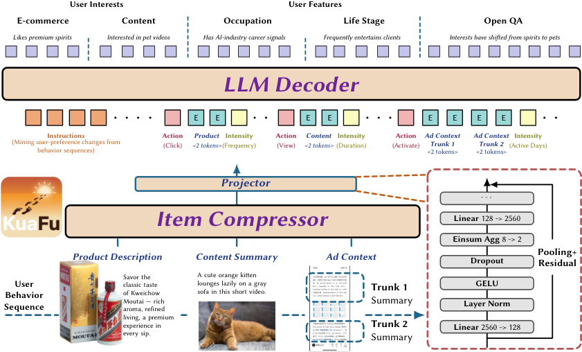
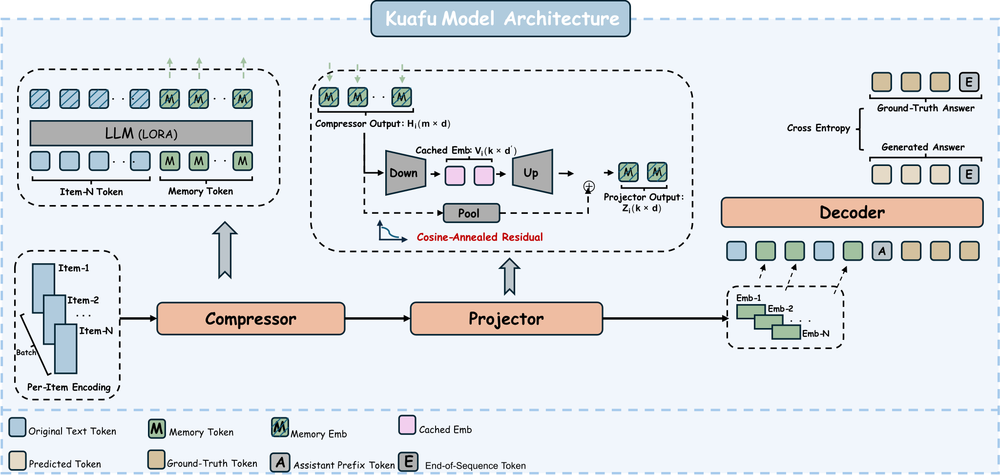
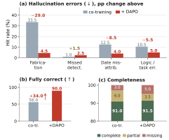

SHARE
KuaFu compresses an item once and reuses that representation wherever the item appears in user histories. Interest extraction and profiling tasks then read chronologically assembled compressed sequences. Tencent uses this separation to make long-history understanding cheaper and refresh profiles more frequently at billion-user scale.
1. Motivation: repeated encoding across users and tasks
Separate profiling tasks often reread the same behavior history. Content interests, shopping interests and occupation inference may each invoke a model over overlapping item text. That duplicates work both across tasks and across users who consumed the same content.
Compressing an entire user history has its own costs. New interactions may require rebuilding the summary, while aggressive compression can lose rare interests or temporal relationships. The paper distinguishes fabrication, omission, date misattribution and broken reasoning, showing why final recommendation quality alone is insufficient to evaluate compression.
KuaFu shares item-side computation while retaining action and chronological structure when constructing the user input. It is an asynchronous understanding and profile-refresh system, rather than a requirement to call an LLM for every online ranking request.
2. Method: item compression, compact caching and chronological decoding

A compressor reads an item's text and appends learned memory tokens. Their hidden states carry the compressed information. These are continuous vectors, rather than discrete product identifiers.
A two-axis projector reduces both the number of vectors and their width. The paper's example reduces eight memory vectors to two and the width from 2,560 to 128. The cache stores only the compact core; a lightweight up-projection restores the width expected by the decoder.
A pooled residual stabilizes early training and decays away. This matters operationally: inference must not require the original wide states if the compact cache is to deliver its storage benefit.
The decoder consumes chronological item representations alongside ordinary instructions and action information. Sharing item representations does not imply identical user profiles. The consumed items, action types and sequence order still distinguish users.

Training proceeds through reconstruction, preference-understanding post-training, joint compression-generation training and hallucination-aware reinforcement learning. Reconstruction teaches the memory to preserve information with the decoder frozen. Question answering then focuses compression on evidence useful for understanding. Joint training adapts both ends of the interface.
The final stage freezes the compressor and projector while updating the decoder. Rewards penalize specific errors and reward completeness, discouraging a trivial strategy of saying less. Judgments compare outputs against original text, rather than relying only on the compressed input.
A curriculum gradually increases history difficulty. Ablations show optimization problems when all lengths are mixed immediately, and poorer generalization without inheriting earlier training stages. Compression and the ability to read its output need coordinated training.
3. Contribution: representation dependencies determine cache reuse
Reuse works because an item's cached representation does not depend on a particular user or downstream task. Updating a user's behavior mainly changes the assembled input, whereas changed item content requires an item-cache update. The representation bank therefore scales with inventory rather than a separate long-history state for every user-task combination.
KuaFu also evaluates representation fidelity directly. It asks whether compressed inputs preserve retrievable events, dates and grounded conclusions. Such intermediate checks can expose damage earlier than an expensive end-to-end production experiment.
Compression ratios require careful denominators. The projector example changes 8×2,560 elements into 2×128, an 80-fold reduction. Shortening the decoder's input relative to raw text is a different quantity. Neither is automatically the whole-service cost reduction.
4. Results: efficiency funds longer histories and faster refreshes
The table selects four production outcomes. Interest tasks use F1, while stable profile attributes use classification accuracy. They should not be interpreted as a single common metric.
| Task | Metric | Previous online model | KuaFu |
|---|---|---|---|
| Content interest | F1 | 85.9 | 86.5 |
| E-commerce interest | F1 | 95.7 | 96.1 |
| Occupation | Accuracy | 86.7 | 87.6 |
| Life stage | Accuracy | 76.0 | 78.0 |
Content-interest throughput rises from 40 to 180 requests per minute per GPU. That is a 350% increase, calculated as (180−40)/40, or 4.5 times the original throughput. The paper reports 190 decoder-side GPUs saved across independently provisioned tasks; the single-task multiplier should not be applied to all hardware.
On public recommendation evaluation, the compressed 4B model improves over its same-size backbone, supporting a representation effect beyond model scale. The CDs subset is an exception where compression underperforms. Public reading-comprehension and private profiling benchmarks also follow different protocols, so their gains should remain separate.

After hallucination-aware training, fabrication falls from 33.5% to 4.5% while overall completeness remains nearly unchanged. Independent model judging and human-agreement checks strengthen the evaluation, though they do not establish coverage of every production failure.
The online experiment randomizes by unique visitor and keeps the end-to-end resource budget equal. Treatment uses compression savings to cover a longer history and refresh profiles more often. Overall GMV increases by 1.37%, with a positive confidence interval. Because the control has a shorter history and slower refresh cadence, this supports the complete profile upgrade rather than isolating a projector or training-stage effect.
5. Limitations: shared representations encode shared trade-offs
The authors identify fixed task-family compression ratios as a limitation. Information-dense content may need more memory than short items, making adaptive compression a natural next step.
Industrial logs and training data cannot be released. External reproduction is limited to public benchmarks and disclosed implementation details. Some private evaluations also rely on model judges and inherit their biases.
Cache versioning is an additional engineering concern. Item edits, compressor upgrades or decoder-interface changes require a compatibility policy. Shared encoding reduces duplicate work, but an incorrect item representation can affect many users. This is an architectural implication, not a production incident reported by the paper.
6. Practical implications
Measure how often the same text is encoded across user histories and tasks. The economics of item-side caching depend on actual reuse, edit frequency and storage cost, not just a large user count.
Evaluate interest labels, temporal attribution and event recovery separately. A representation sufficient for occupation inference may be inadequate for explaining a recent click. Task-specific fidelity checks identify where shared compression is appropriate.
Keep representation, history coverage and refresh cadence distinguishable in experiments. Holding two fixed while changing the third helps explain how saved compute reaches business outcomes. KuaFu demonstrates one useful path from efficiency to better update capability.
Source: https://arxiv.org/html/2609.31045v2 . First submitted September 25, 2026; this run discovered the October revision. Calculations and deployment suggestions are editorial analysis.
Discussion
Add experiment details, reproduction notes or a different take. Requires a GitHub sign-in.
Loading the discussion…